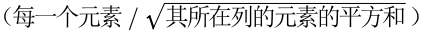
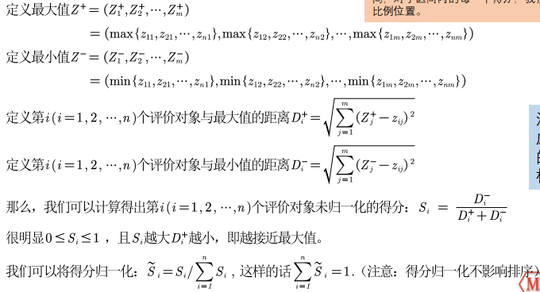
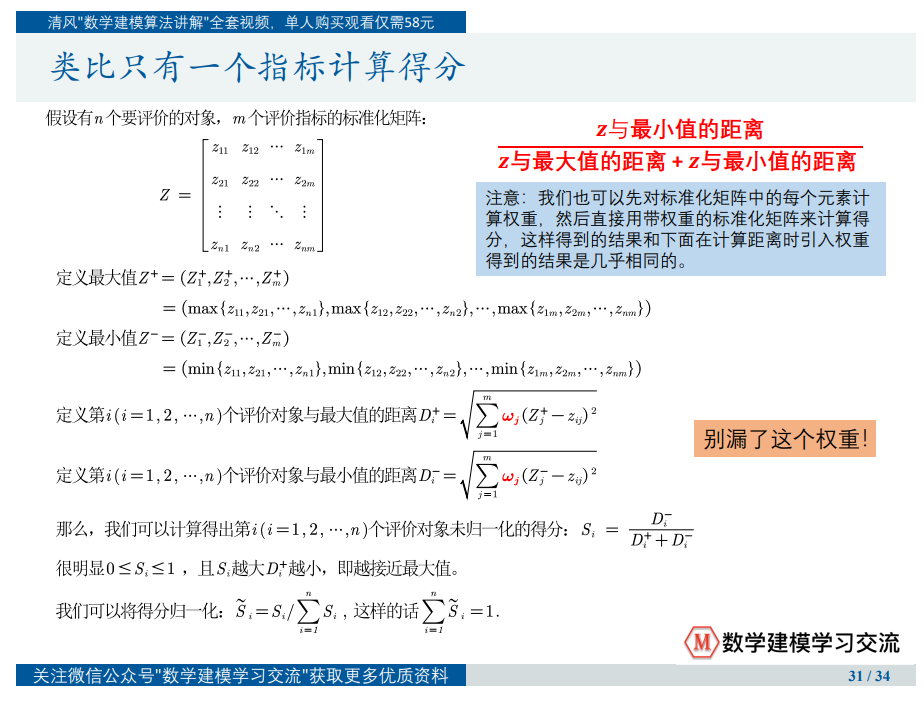

# TOPSIS 介绍
C.L.Hwang 和 K.Yoon 于 1981 年首次提出 TOPSIS (Technique for Order Preference by Similarity to an Ideal Solution)，可翻译为逼近理 想解排序法，国内常简称为优劣解距离法。 TOPSIS 法是一种常用的综合评价方法，能充分利用原始数据的信息，其结果能精确地反映各评价方案之间的差距。 基本过程为先将原始数据矩阵统一指标类型（一般正向化处理） 得到正向化的矩阵，再对正向化的矩阵进行标准化处理以消除各指 标量纲的影响，并找到有限方案中的最优方案和最劣方案，然后分别计算各评价对象与最优方案和最劣方案间的距离，获得各评价对 象与最优方案的相对接近程度，以此作为评价优劣的依据。该方法对数据分布及样本含量没有严格限制，数据计算简单易行。
# 使用 TOPSIS 的原因
由于层次分析法的主观因素太多，并且题目往往有详细的数据，这时我们就必须使用别的方法来对指标进行分析。TOPSIS 具有找到方案中的最优方案和最劣方案，且不受主观因素的影响，所以该模型更加常用。
# 建模步骤
一：将原始矩阵正向化
最常见的四种指标：
| 指标名称 | 指标特点 | 例子 |
|---|---|---|
| 极大型（效益型）指标 | 越大（多）越好 | 成绩、GDP 增速、企业利润 |
| 极小型（成本型）指标 | 越小（少）越好 | 费用、坏品率、污染程度 |
| 中间型指标 | 越接近某个值越好 | 水质量评估时的 PH 值 |
| 区间型指标 | 落在某个区间最好 | 体温、水中植物性营养价值 |
所谓的将原始矩阵正向化，就是要将所有的指标类型统一转化为极大型指标。（转换的函数形式可以不唯一）。
二：正向化矩阵标准化
标准化的目的是消除不同指标量纲的影响。
假设有 n 个要评价的对象，m 个评价指标（已经正向化）构成的正向化矩阵如下：
那么，对其标准化的矩阵记为 Z，Z 中的每一个元素：

三：计算得分并归一化
注意：要区别开归一化和标准化。归一化的计算步骤也可以消去量纲的影响，但更多时候，我们进行归一化的目的是为了让我们的结果更容易解释，或者说让我们对结果有一个更加清晰直观的印象。例如将得分归一化后可限制在 0‐1 这个区 间，对于区间内的每一个得分，我们很容易的得到其所处的比例位置。

# 模型拓展
上述的例子中指标的权重默认相同，我们可以通过层次分析法计算权重，再代入计算。
